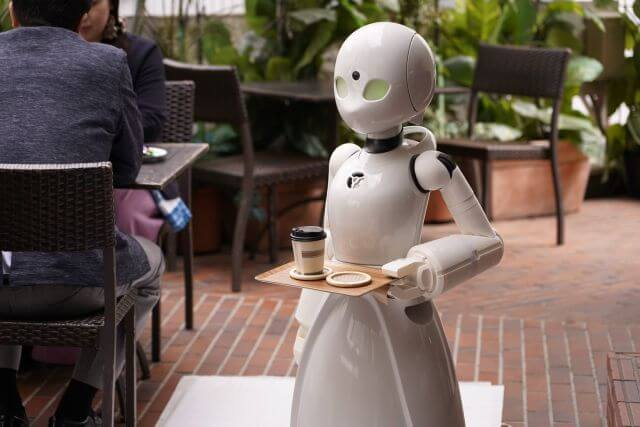
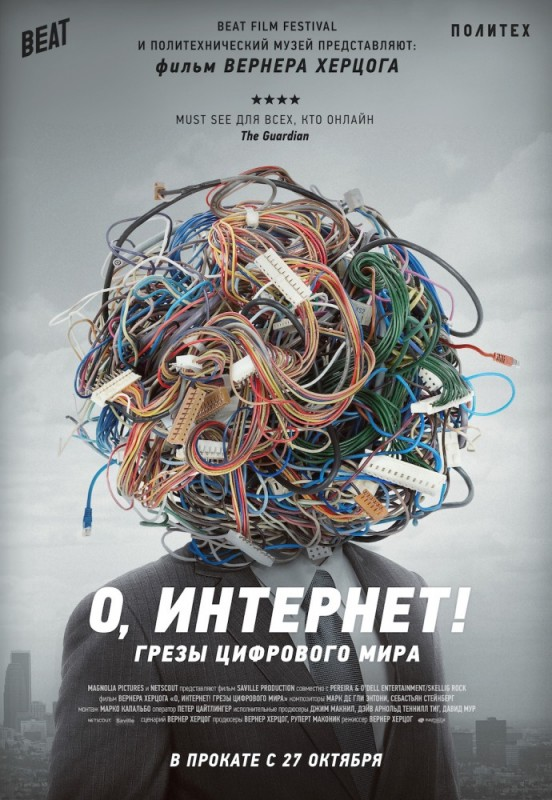

Flood maps

Much has been said and written about global warming, but despite this, many people still cannot fully realize the consequences of this phenomenon. Ocean acidification cruel weather cataclysms, reduced yields - and this is only a small one some of those disasters that may cause fever the atmosphere. And global warming and the melting of ice caused by it, naturally, it threatens to flood the coasts and even small islands. So that people can visualize the consequences of raising ocean level, the authors of the famous magazine National Geographic created an interactive map showing flooding coastal zones.
Site: flood.firetree.net
Thetruesize
Scientists to this day have not come to a common opinion as the most correctly display the relief of a spherical planet on a flat a sheet of paper. It's like drawing a map on a mandarin, peel off and try to flatten it into a rectangle. It is clear that areas close to the "poles" will have to stretch. We all use the Gerard Mercator projection, but it has shortcoming: the closer the islands and countries are to the poles, the more they seem. The thetruesize.com website is created so that we can better present the real size ratio on the map.
Site: thetruesize.com
Labster

Labster gives students access to realistic laboratory experiences that allow them to conduct experiments and practice your skills in a fun and risk-free learning environment. Currently there are 83 models that cover everything from biology and medicine to physics and chemistry. Thousands of university students and high school use labster every year as a blended learning. A recent study on nature biotechnology shows how students using Labster studied 101% more. Easily evaluate or track student performance and let them control your training. Grab the students using the appropriate scripts and 3D animations visualizing the life sciences down to the molecular level.
Site: labster.com
The FreeBSD Project

FreeBSD is the operating system used for modern servers, desktops, and embedded platforms. Large community continuously developed it for more than thirty years. Thanks to advanced networking opportunities, security and storage FreeBSD has become a platform for many most downloaded websites and most common embedded network devices and storage devices.
Site: freebsd.org
Experimental fusion reactor
International Thermonuclear Experimental Reactor (ITER) was Launched in 2007 in the south of France, sixty kilometers from Marseille. The construction of this object was originally planned finish by 2016, but now these deadlines are shifted to 2020. Total estimate project already exceeds 15 billion euros. Work on the project scientists and engineers from the EU (the community stands as one) China, USA, Russia, India, Japan, South Korea and Kazakhstan.
Mozi

Mozi — first satellite in the world for quantum transmission information to Earth. QSS is a project of the Chinese Academy Sciences with the participation of the Austrian Academy of Sciences. total cost estimated about 100 million dollars. One of the mission objectives is the implementation of quantum information transfer and installation secure communication channel between Beijing and Vienna, fully invulnerable to hackers. Satellite for four months after orbital launch, passed orbital testing. As of January 18, 2017, satellite testing is over, All systems are working properly and the satellite is transferred to the phase operating in orbit.
Site: wikipedia.org
Dawn ver.β
Кафе Dawn ver.β remarkable in that it is fully equipped unusual waiter-robots. Robot Orihime-D, developed by a startup Ory, specializing in robotics for people with limited capacity. Employees with such diseases as amyotrophic lateral sclerosis or with spinal injuries brain, working at home, receive 1000 yen (585 rubles) per hour (standard wage for part-time day in Japan) for serving coffee and interacting with clients. But, more importantly for these people, this is what that they got independence.
Site: viewout.ru
Dark Matters:
Twisted But True
 Stories about the sensational side of science, including experiments.
Stories about the sensational side of science, including experiments.
Let There Be Light
 The film tells about purposeful scientists who
working on the creation of a fusion plant.
The film tells about purposeful scientists who
working on the creation of a fusion plant.
Lo and Behold, Reveries of the Connected World
 Documentary examines past, present and future. world of internet.Inside: Google
 Documentary film about the development of the largest search engine Google.
Documentary film about the development of the largest search engine Google.
Do You Trust this Computer?
 Documentary that explains the benefits and especially
artificial intelligence flaws from a different perspective.
Documentary that explains the benefits and especially
artificial intelligence flaws from a different perspective.
The Truth About Killer Robots
 The authors of the film are interested in how the algorithms replace people in
the most unexpected professional and personal fields.
The authors of the film are interested in how the algorithms replace people in
the most unexpected professional and personal fields.